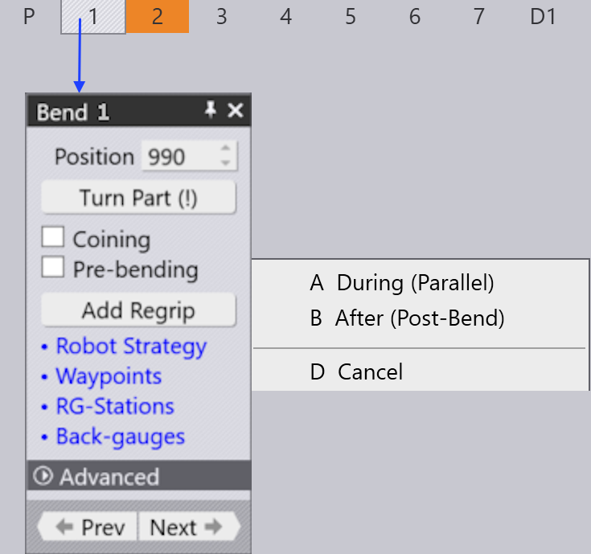
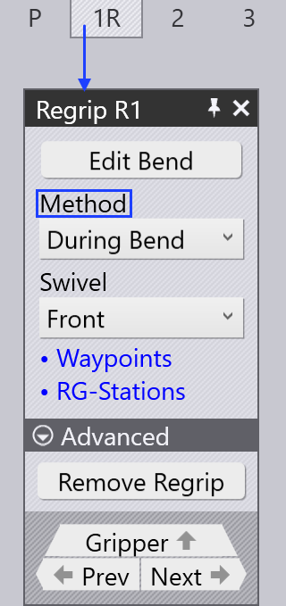

Add/Remove regrip
Adding a regrip inbetween bend cycle may prevent collision errors. To add a regrip, click twice on a bend cell in the bend navigator and select Add Regrip option.
 
When you click on Add Regrip, you see the following options:
-
During (Parallel) - A new regrip sequence (1R) is introduced with During Bend Method selected as default.
-
After (Post- Bend)- This will add a new the re-grip cell after the selected bending cell in the navigator. Also here we get the Post-Bend Method selected by default.
Always check for any collision errors during the addition of regrip. -
Swivel - This option defines from which side the robot will approach the part to perform the regrip. The robot gripper swivels around the part to grab it from the other side using the Swivel option.
Remove regrip
Use the Remove Regrip option to remove a newly added or an existing regrip. This option appears only in cases where it may be possible to remove a regrip operation. In general, a regrip operations cannot be removed if the part must be held from the other side in order to continue bending operation.
An existing regrip can be removed, which could cause collisions during the bending process.